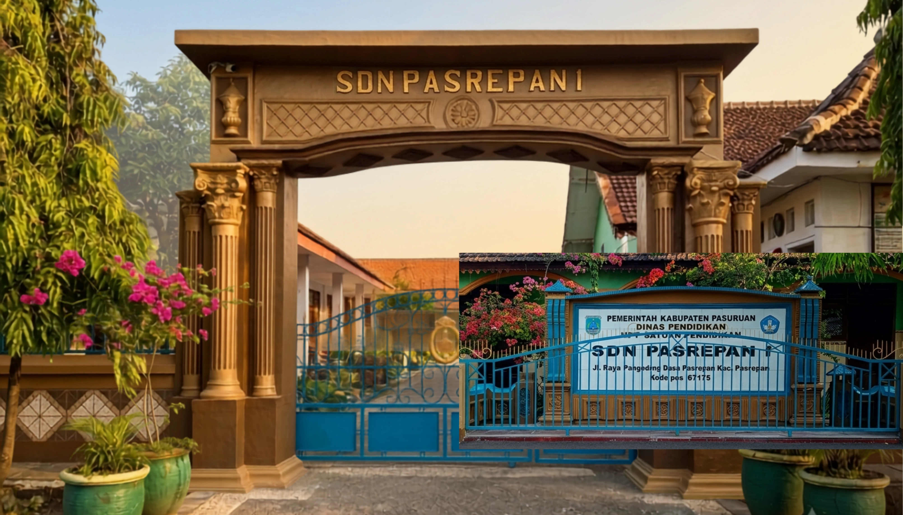
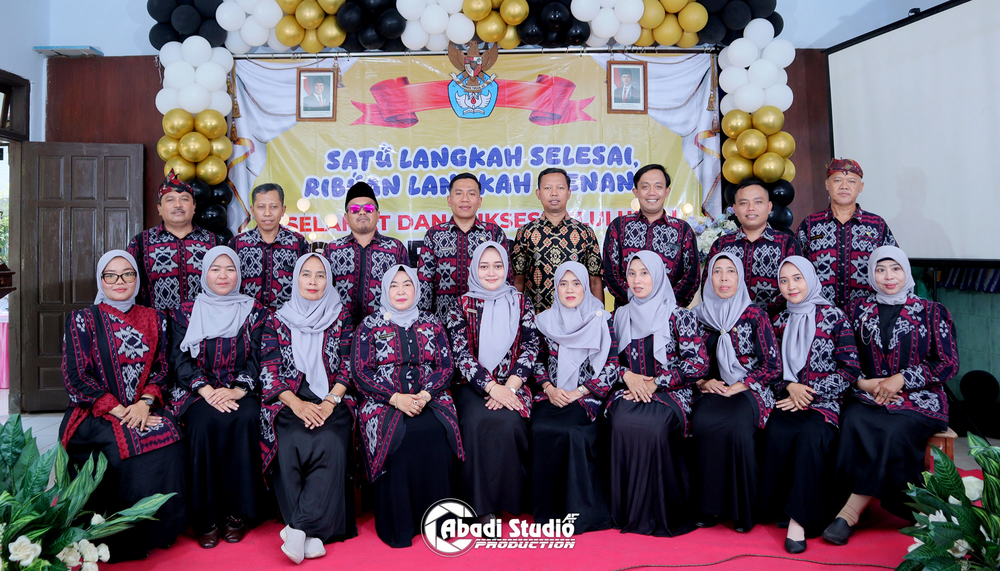
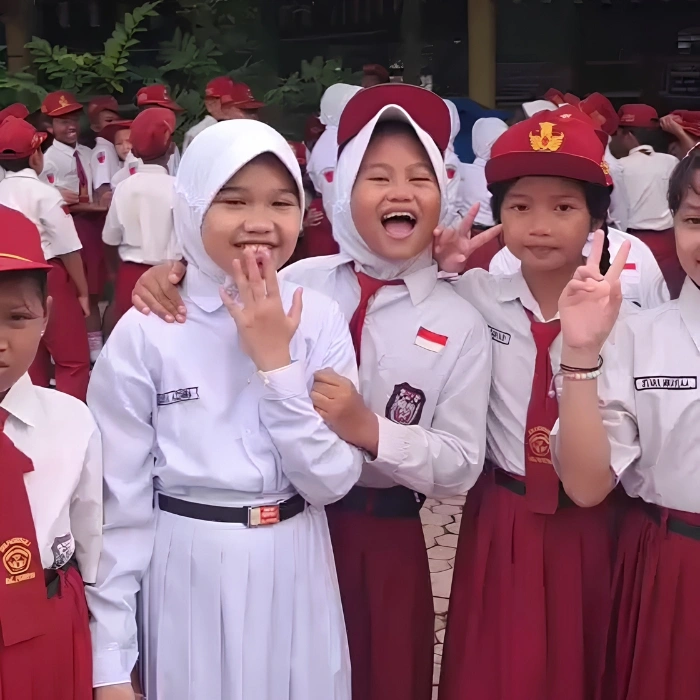
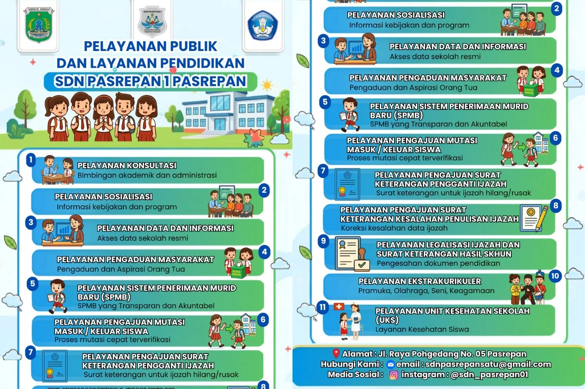
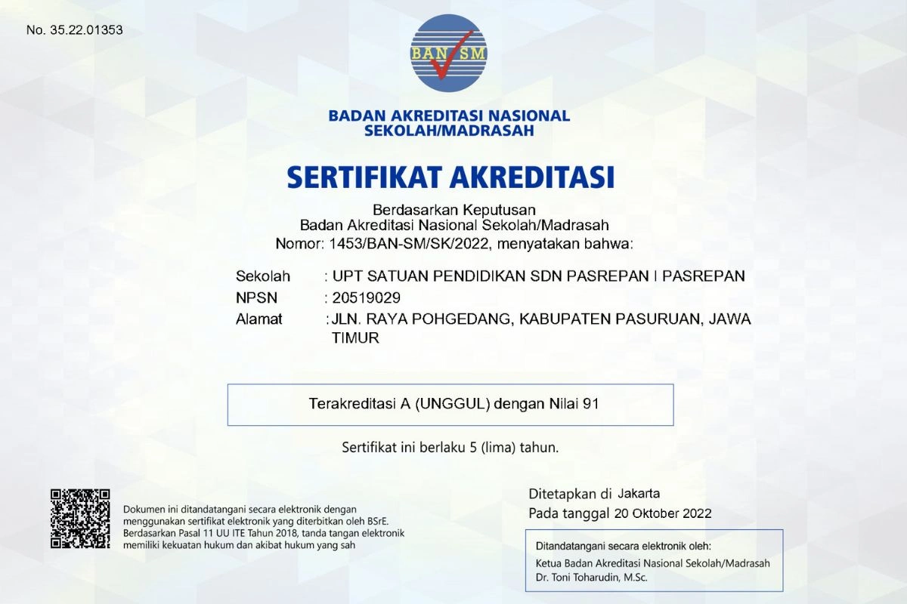

Survei Kepuasan Masyarakat (SKM)
Silakan pindai QR Code di bawah ini atau klik tautan alternatif untuk mengisi survei:


Membentuk generasi cerdas, berakhlak mulia, kreatif, dan siap menyongsong masa depan digital yang gemilang. Mari bergabung bersama keluarga besar SDN Pasrepan I
Profil Sekolah Kontak Kami
Kami menyediakan ruang kelas yang representatif, sarana olahraga serta laboraturium komputer untuk mengenalkan teknologi sejak dini kepada seluruh siswa.
Lihat Fasilitas Daftar SekarangProses belajar mengajar diampu oleh guru-guru berpengalaman, sabar, dan bersertifikasi.
Mengenalkan pemanfaatan teknologi secara positif dan edukatif kepada siswa sejak dini.
Mengembangkan bakat dan karakter anak melalui Pramuka, seni bela diri, tari, dan keagamaan.
Menanamkan nilai-nilai religius dan budi pekerti luhur, sekaligus kesadaran kolektif untuk kelestarian dan keasrian lingkungan sekolah.

SDN Pasrepan I adalah satuan pendidikan dasar yang berkomitmen penuh untuk membentuk generasi bangsa yang cerdas, berakhlak mulia, dan berbudaya lingkungan. Kami menyediakan lingkungan belajar yang aman, kondusif, dan menyenangkan bagi tumbuh kembang anak.
Melalui kurikulum yang inklusif dan berbagai kegiatan pembiasaan karakter keagamaan serta sosial, kami mendampingi setiap siswa untuk menggali potensi terbaik mereka, baik di bidang akademik maupun non-akademik.
Guru Kompeten & Sabar
Pembiasaan Religius & Akhlak
Literasi & Akses Digital
Kegiatan Ekstrakurikuler
Lingkungan Sehat & Asri
Budaya Karakter 7 KAIH



Wali Murid Kelas VI
"Sangat puas menyekolahkan anak di sini. Gurunya sabar, telaten, dan fasilitas digitalnya membuat anak saya jadi lebih semangat belajar."
Alumni (Kini di SMPN 1 Pasrepan)
"Landasan karakter dan kedisiplinan yang diajarkan bapak/ibu guru di SDN Pasrepan I sangat membantu saya beradaptasi dan berprestasi di jenjang SMP."
Tokoh Masyarakat
"Sekolah yang terus berinovasi. Lingkungannya bersih, aman, dan sangat mendukung perkembangan bakat minat anak-anak di desa Pasrepan."
Korwil Pasrepan
"SDN Pasrepan I secara konsisten menunjukkan tata kelola pendidikan yang inklusif, inovatif, dan akuntabel. Sinergi antara tenaga pendidik dan program digitalisasi sekolah di sini patut menjadi teladan dalam meningkatkan mutu kelulusan di wilayah Pasrepan."